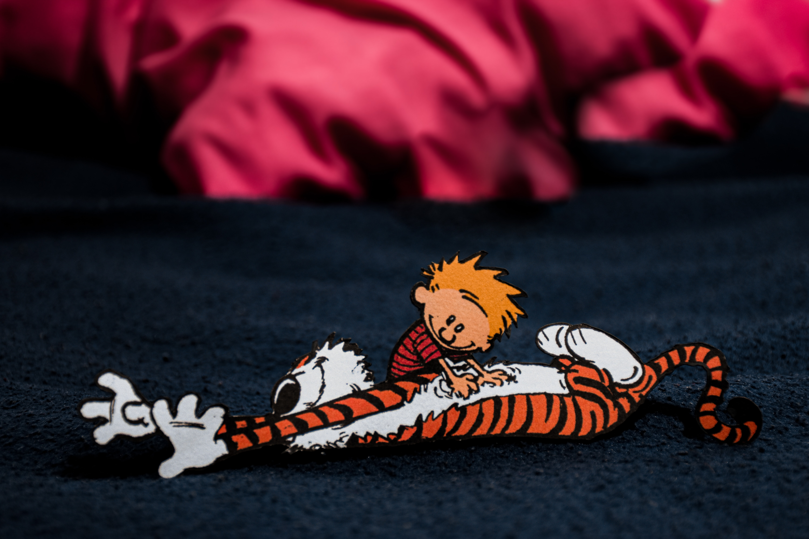

Like other Pooh characters, Tigger is based on one of Christopher Robin Milne's stuffed toy animals.He appears in the Disney cartoon versions of Winnie the Pooh and has also appeared in his own film, The Tigger Movie (2000).
He is known for his distinctive orange and black stripes, large eyes, a long chin, a springy tail, and his love of bouncing. As he says himself, "Bouncing is what Tiggers do best." Tigger never refers to himself as a tiger, but as a "Tigger". Although he often refers to himself in the third person plural (e.g. "Tiggers don't like honey!"), he maintains that he is "the only one".